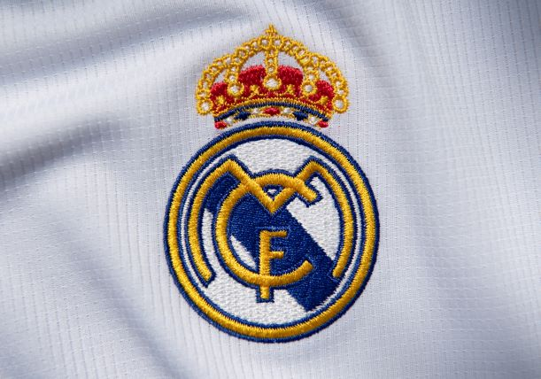

{{ madrid }}
I have been a Real Madrid fan for more than 20 years. My love for Real Madrid stems from another of my hobbies, video games. The world cup was about to begin, and my best friend was already a big Merengue fan and suggested we played the FIFA World Cup game. I had never played a soccer video game, let alone watch an entire game, but I agreed because he was super excited for Spain’s striker, Raul. As we played together the video game, I started learning about the teams and their top players, especially Real Madrid. Eventually, I got curious and started watching the World Cup, following Spain, since most of its players played in “La Liga”, which is the league where Real Madrid plays.
In the video below, you can watch the best goals of my favorite soccer player of all time, Raul. The goals are from when he was playing for Real Madrid. He scored a total of 323 goals for Real Madrid and 44 for Spain.
I started watching all the games of “The Galactics”, which was the nickname that the team had. Some of my favorite players of that time were:
- {{ player }}
If you want to learn more about Real Madrid, make sure you visit their webapage by clicking on the image below.
